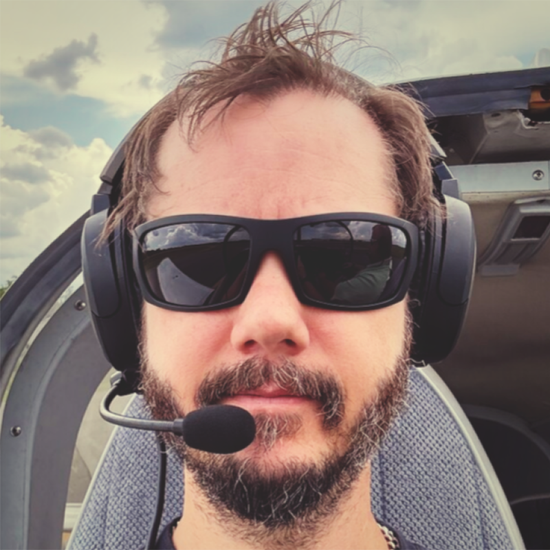

I build modern digital systems — and the teams needed to deliver them.
Digital Production Technologist with +30 years of professional experience, focused on practical engineering leadership, front-end and platform development, API integration, enterprise CMS and commerce platforms, deployment pipelines, release automation, and AI-assisted delivery practices.
I work across the full shape of digital delivery — from pitch support, technical scoping, and vendor alignment to hands-on implementation, team leadership, and production systems that need to keep working after launch.

Trusted with global brands.
- BMW
- Taco Bell
- Dow Inc.
- PUMA
- LG Electronics
- Levi’s
- Home Depot
- The North Face
- NARS Cosmetics
- Traeger
- Astro Gaming
- Movado
- JanSport
- World Kitchen
- Oakley
What I bring to a team.
Technical depth and the leadership layer that makes it ship — and stay shipped. These are the areas where the CV and the work converge.
Engineering Leadership
Managing and mentoring the people who build the platform, and building stronger engineering teams around them.
- Team leadership & direct reports
- Mentorship & player-coaching
- Performance feedback & growth
- Cross-discipline collaboration
Platform & Architecture
Enterprise systems designed to be supported and evolved long after launch — not just delivered.
- Enterprise CMS — Adobe Experience Manager
- Commerce platforms — Demandware, Hybris
- Scalable architecture & modernization
- Application programming interfaces (API) & integration
Delivery & Process
Turning complex requirements into reliable, repeatable releases the whole team can trust.
- Technical scoping & LOE estimation
- Delivery planning & roadmaps
- CI/CD workflows & rapid deployments
- Documentation, AI-assisted workflow, production support & release hygiene
Front-End Craft
The presentation tier done right — fast, accessible, and built on solid fundamentals.
- Front-end development — JS ES6, Sass, CSS3
- Web accessibility
- Web performance
- Build tooling
Approach
I'm at my best in the messy middle — where legacy systems, modern platforms, team dynamics, and real-world constraints collide. That's where clear thinking, engineering fundamentals, practical mentorship, and ownership matter most.
Where I’ve led, built, and supported.
A career arc from hands-on front-end engineering to platform leadership, technical direction, team management, documentation, CI/CD, accessibility, and production support. Expand any role for the full account.
Senior Technology DirectorNov 2025 — Jun 2026
Helped lead engineering vision, platform strategy, and delivery for large-scale digital ecosystems — translating complex business needs into scalable, high-performance experiences built to be supported and evolved over time. Operated at the intersection of architecture, delivery, infrastructure, and team leadership.
- Shaped long-term technology roadmaps across enterprise platforms, aligning architecture, infrastructure, delivery frameworks, and business outcomes.
- Provided senior technical direction across modernization, performance, accessibility, CI/CD, release planning, documentation, and production support.
- Partnered with technical leads, delivery leaders, QA, operations, and client stakeholders to evaluate technical risk, scope complex work, and support reliable execution.
- Managed and supported direct reports across technology roles, with guidance, feedback, growth support, and day-to-day leadership.
- Strengthened the engineering team by identifying skill gaps, improving knowledge sharing, and ensuring the right technical leadership was in place for complex account work.
- Balanced hands-on technical depth with leadership, keeping teams focused on maintainability, scalability, and operational excellence.
Technology DirectorApr 2022 — Nov 2025
Broad technical strategy, account planning, and team leadership — guiding the platform technology team on roadmaps, architecture direction, delivery planning, technical scoping, and cross-discipline collaboration.
- Led the technology team in creating reliable, high-performance digital experiences across complex platform, infrastructure, and campaign work.
- Supported strategic account initiatives and platform roadmaps, balancing business priorities with architecture, maintainability, performance, accessibility, and delivery realities.
- Worked with technical leads to scope work, estimate LOE, identify risks, and translate complex requirements into practical delivery plans.
- Managed direct reports through regular check-ins, feedback, prioritization support, and technical guidance tied to project and account needs.
- Improved documentation, development practices, and cross-team communication to reduce delivery friction and support platform stability.
- Built relationships across clients, technical counterparts, delivery, QA, creative, strategy, and account leadership to improve planning, alignment, and shared ownership.
- Advocated for developers and leads by surfacing technical concerns and ensuring tradeoffs were clearly understood.
Technology LeadDec 2017 — Apr 2022
Oversaw large initiatives and all platform and infrastructure work, leading the platform technology team to build an engaging, robust, and reliable platform while supporting the Technology Director on strategic account initiatives.
- Understood the technical complexity of multi-tiered web solutions and helped ensure appropriate design solutions were achieved.
- Provided hands-on development support to the project team whenever necessary.
- Defined and contributed to solution architecture for Adobe Experience Manager components, including leading code reviews.
- Enforced account development processes and ensured appropriate project documentation.
- Partnered with technical PMs, QA leads, and Ops to design CI solutions for rapid release deployments.
- Enacted platform and infrastructure continuous-improvement processes across agency, client, and third-party partners.
Senior Experience Technology EngineerPublicis Sapient · Mar 2016 — Dec 2017
Drove development of commerce projects for clients, bridging creative and technical delivery. Owned the presentation tier end to end — browser and server technologies responsible for rendering the user experience.
Senior Demandware EngineerMoku Collective · Aug 2015 — Jan 2016
Worked independently and in small teams alongside local and overseas developers — responsive redesigns, homepage rebuilds, landing-page development, project estimates, and support resolution.
Senior Interactive EngineerLiveAreaLabs · Apr 2015 — Aug 2015
Led the redesign and re-platforming of the Movado brand on Demandware, focused on UI/UX client-side integrations while refining modern development workflows, build tooling, and CI automation.
Senior UI LeadMedia Hive · Jun 2014 — Apr 2015
Led UI discussions with clients and creative agencies across the NY and NJ offices, documenting requirements and interactions and executing on them. Served as a player-coach, mentoring UI developers while contributing as an individual contributor.
Lead Software EngineerFluid, Inc. · Jan 2010 — Jun 2014
Agency client-side tech evangelist — Software Architect, Lead Software Engineer, and Team Lead — across interactive and e-commerce work for LG Electronics, The North Face, JanSport, Levi's, World Kitchen, and Oakley. Frequently led teams of 4 to 16 and served as main client point of contact.
- Spearheaded the migration from CVS to Git and from MediaWiki to per-repository GitHub wikis.
- Introduced the agency's first CSS precompiler and evolved the client-side stack into a task-based process with custom generators and scripted virtual environments.
- Handled team-lead duties: weekly check-ins, administrative updates, and yearly performance reviews.
Technical ConsultantThe Pedowitz Group · Aug 2009 — Oct 2009
- Converted version control from Subversion to Mercurial and the storage backend from MySQL to PostgreSQL with custom migration scripts.
- Replaced a single Slicehost VPS with a scalable cluster: Nginx, Python/virtualenv, Django, PostgreSQL, Fail2Ban, Shorewall, and memcached.
- Introduced Pivotal Tracker, wikis, Campfire, and Basecamp for distributed project organization.
Technology LeadProSTEP, Inc. · 1998 — 2003
Conceptualized, developed, and directed client and internal software projects while cultivating and managing the engineering team. Drove a multi-platform micro-datacenter hosting thousands of domains and email services reaching over 2 million outbound messages per day.
WebmasterQStar Technologies · Jan 1995 — Dec 1995
Designed and developed the international corporate website.
Managing PartnerFeb 1998 — Present
JUPITER BRAIN began as an agency uniting experienced specialists across web design and development, UX and interactive design, rich internet applications, accessibility and usability, high-availability deployments, and technology integration. During its agency years, I contributed across the full project lifecycle — from pitch and contract close through design, production, development, deployment, and ongoing support.
- Authored design specifications, technical documentation, project proposals, workflow diagrams, service-level agreements, and interactive prototypes.
- Managed project budgets, milestones, and schedules to support successful delivery.
- Operated in whatever capacity the project required — from strategy and estimation through hands-on production and support.
JUPITER BRAIN has since transitioned into a multi-member holding company, where I now serve as a partner. The company provides strategic oversight and shared services across its subsidiaries, supporting affiliated digital agencies as they transform complex challenges into scalable, sustainable solutions. Work once executed directly under JUPITER BRAIN is now carried out by specialized operating entities focused on modern software, infrastructure, and analytics solutions.
From people I've worked alongside.
Jeremy has been a huge part of our team's success at Critical Mass. He’s sharp, solution-oriented, and a collaborative team player. And his integrity is matched (or perhaps exceeded) only by his deep knowledge and expertise in tech platforms and integrations. While I would recommend Jeremy for any tech leadership role, I hope he continues to lead and advance our work together at CM.
I've had the pleasure of working with Jeremy for years and can say he is one of the most talented engineers I've had the opportunity to interact with. He has a knack for picking up new technology quickly and to the depth of someone working with it for years. He is a champion of best practice and shows it in how he develops and leads. His most admirable quality is his deep desire and passion in doing things the right way, even if it isn't the fast or easy way. Without a doubt, Jeremy would be an asset to any organization he is a part of.
Jeremy is a strong engineer with tremendous technical expertise allowing him to analyze complex issues and provide well-structured implementation solutions. It has been my experience that Jeremy will go beyond expectations to ensure that his work and the work of his team exceed expectation and always follows industry best practices. In addition, Jeremy is proving to have strong leadership skills that help him bring structure and clear communication to his team allowing everyone to implement and deliver his/her work faster and more efficiently. Finally, Jeremy can provide non-technical stakeholders guidance and recommendations balancing user requirements and technical validity. I would work with Jeremy on any project and trust him to build and lead a team!
Jeremy was born to problem solve. I've had the pleasure of working with Jeremy for many years... on large scale redesigns, e-commerce rollouts, advanced lead capture, data service integrations, the list goes on... Jeremy is driven to take on tough projects, he challenges himself, the team, vendor partners and clients not just for solutions, but for THE solution... the right way to do things when the clear path is not always as evident. Jeremy has fostered a team dynamic that allows colleagues to reach their true potential... both by his managerial style, but his ability to connect, roll up his sleeves and work collaboratively. I hope to work with Jeremy for years to come as he's lifted my technical background as a lowly account dude to new heights and allowed me to connect with the team in ways I never thought possible.